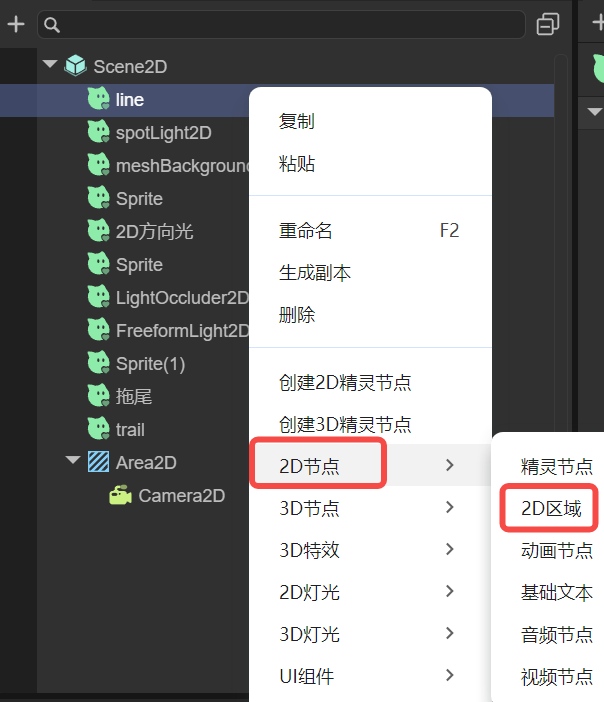
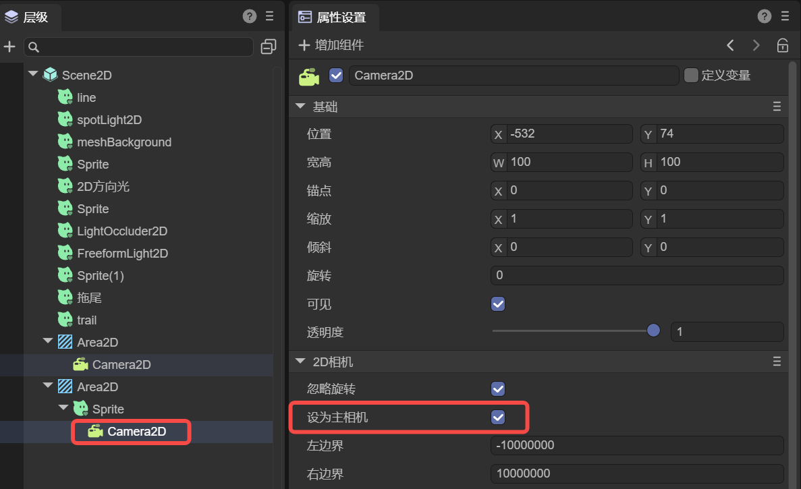

2D区域
LayaAir 3.3版本增加了一个名为2D区域（Area2D）的新节点类型，专为2D游戏的视觉和相机管理设计。这一功能强化了对游戏场景中可视区域的渲染控制与管理，方便开发者实现更高效且动态的游戏视觉呈现。
一、2D区域基础
1.1 如何创建一个2D区域
在层级面板中，鼠标右键调起 “右键菜单“， 依次点击"2D节点" -> "2D区域"，即可创建一个2D区域节点，如图1-1所示。

（图1-1）
1.2 2D区域与相机的关系
2D区域的主要作用是定义和管理2D相机所覆盖的区域，通过精确控制相机，能够为玩家呈现丰富和动态的视觉效果。
每个2D区域只允许存在一个2D主相机，如图1-2所示。该相机的配置直接影响区域的视觉输出。为了保证相机功能的正确实施，相机节点必须置于对应2D区域的子节点中，否则会报错。

（图1-2）
1.3 2D区域与静态UI的区别
在2D区域之外的节点，都是静态UI，也就是不被2D相机影响的UI。静态UI与3D相机的画面、2D区域的画面，在运行的时候会叠加到一起显示。
显示的级别是，2D在上层，3D在下层。同样属于2D的静态UI和2D区域，则是按照节点树的顺序，节点顺序在上面的先绘制，在下面的后绘制。也就是说在节点树下面的，运行显示的时候更靠上，不被下层遮挡。
不管是精灵还是UI组件等显示对象节点，只要放到2D区域内，就会被2D相机看到，受2D相机的运动所影响。而独立在2D区域外的，永远位于屏幕之上，不被相机所影响。
例如，手势虚拟摇杆，技能按钮，功能导航这些，就不能放到2D区域节点下，否则就会由于相机的运动，就会从屏幕上位移，甚至可能消失。
二、应用场景
2D区域的引入，极大地提升了游戏设计的灵活性，使得开发者可以根据具体需求，实现单区域控制或多区域分屏等多样化的游戏布局。
2.1 单一2D区域
对于大多数2D游戏，单个2D区域足以管理整个游戏的视觉呈现。这种情况下，2D相机可以根据游戏逻辑自动或手动调整，以聚焦玩家的操作或游戏中的特定事件，增强玩家的沉浸感。
2.2 多2D区域分屏
通过设置多个2D区域，开发者可以轻易的为多玩家游戏创建独立的视觉和操作界面，如双人竞技游戏中的分屏模式，一边是玩家自己的游戏画面，一边是竞争对手的实时画面，每个玩家都通过自己的2D区域与相机，观察和互动游戏世界，增加游戏的竞技性与互动性。